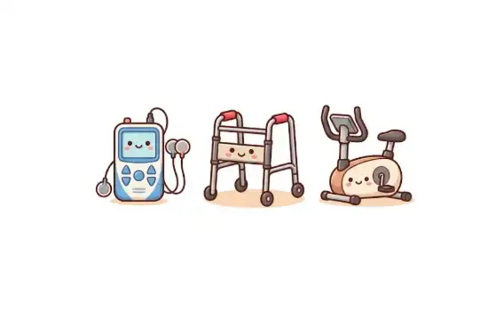

「月度復康報告」正式上線：讓復康進度清晰可見

為了讓家屬更即時、精準地掌握長者的復康進展，芯凝正式推出優化版的「月度護理及復康記錄表」。這份報告以數據化與圖表化的方式整合日常生命表徵、運動治療摘要、物理治療長期目標等重要資訊。
報告內容包括：
- 日常生命表徵紀錄
- 運動治療摘要及進度
- 物理治療長期目標及達成情況
- 步行能力及動態平衡評估
- 下月護理重點需求建議
我們深信，透明化的資訊連結，能讓物理治療師、護士與家屬三方形成最強大的復康鐵三角，共同見證長者的每一分進步。
了解芯凝的最新服務、優惠活動及健康資訊
為了讓家屬更即時、精準地掌握長者的復康進展，芯凝正式推出優化版的「月度護理及復康記錄表」。這份報告以數據化與圖表化的方式整合日常生命表徵、運動治療摘要、物理治療長期目標等重要資訊。
我們深信，透明化的資訊連結，能讓物理治療師、護士與家屬三方形成最強大的復康鐵三角，共同見證長者的每一分進步。
還有其他問題嗎？我們的個案經理很樂意為您解答！